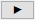

Dialog Einfache ANOVA
OneWayANOVA-Dialog
Dieser Dialog kann verwendet werden, um eine einfache ANOVA mit wiederholten Messungen durchzuführen. Um diesen Dialog zu öffnen, wählen Sie Statistik: ANOVA: Einfache ANOVA im Origin-Menü.
Hilfreiche Informationen
Neu berechnen
Eingabe
Setzen Sie die Auswahlliste auf Roh oder Indiziert.
| Indiziert |
Bei dieser Variante enthält eine Spalte die Stufen der Faktorvariable. Die entsprechenden Antwortdaten befinden sich in einer anderen Spalten.
Faktor
- Legen Sie die Faktorspalte fest. Beachten Sie, dass die Faktorspalte als Kategorial gesetzt wird, wenn es sich um eine Textspalte handelt.
Daten
- Legen Sie die Spalte mit den Antwortdaten fest.
 : Wenn Sie numerische anstatt Textwerte für den Faktor im Ergebnisdiagramm anzeigen möchten, setzen Sie bitte Die Spaltenzuordnung der Faktorspalte auf Gruppe. : Wenn Sie numerische anstatt Textwerte für den Faktor im Ergebnisdiagramm anzeigen möchten, setzen Sie bitte Die Spaltenzuordnung der Faktorspalte auf Gruppe.
|
| Roh |
Bei dieser Variante sind die Antwortdaten jeder Stufe der Faktorvariable in einer separaten Spalte gespeichert.
Faktor
-
Name
- Geben Sie den Faktornamen ein.
-
Anzahl der Stufen
- Standard = 2
-
- Legen Sie die Anzahl der Stufen fest. Jede Stufe hat eigene Bedienelemente für Stufei. Beachten Sie, dass die Systemvariable @AML dazu verwendet werden kann, die max. Anzahl der unterstützten Stufen für ANOVA zu steuern, die standardmäßig 25 beträgt. Sie können die maximale Anzahl der Stufen ändern, indem Sie der @AML-Variablen neue Werte zuweisen.
-
Stufei Name
- Standard = Faktor i Stufei
-
- Legen Sie den Stufennamen fest. Automatisch verwendet den Langnamen des Blatts.
Daten
-
Stufei
- Legen Sie die Datenspalte für jede Stufe fest. Verwenden Sie die Bedienelemente der Datenauswahl neben jeder Stufe oder klicken Sie auf die Schaltfläche Navigieren rechts von Daten und  und wählen Sie Aus Arbeitsblatt auswählen, um über Point-and-Click Arbeitsblattspalten auszuwählen, oder Spalten auswählen, um den Spaltenbrowser zu öffnen.
|
Deskriptive Statistik
Aktivieren Sie diese Option, um Ergebnisse der deskriptiven Statistik im Ausgabebericht zu berücksichtigen.
Signifikanzniveau
Legen Sie das Signifikanzniveau der einfachen ANOVA fest.
Mittelwertevergleich
Wählen Sie Methoden für den paarweisen Mittelwertevergleich im Nachhinein:
| Signifikanzniveau |
Legen Sie das Signifikanzniveau des paarweisen Mittelwertevergleichs fest. |
| Tukey |
Verschiedene Methoden für den paarweisen Mittelwertvergleich (Weitere Informationen finden Sie unter Algorithmen.)
|
| Bonferroni |
| Dunn-Sidak |
| Fisher LSD |
| Scheffé |
| Holm-Bonferroni |
| Holm-Sidak |
| Tabelle der Gruppierungsbuchstaben |
Die Differenz des Mittelwerts wird mit Buchstaben gezeigt. Der gleiche Buchstabe bedeutet, dass keine signifikante Differenz besteht. Ein unterschiedlicher Buchstabe bedeutet, dass es eine signifikante Differenz zwischen den zwei Gruppen gibt. |
Test auf gleiche Varianz
Wählen Sie Testmethoden zum Testen der Homogenität der Varianz.
| Signifikanzniveau |
Legen Sie das Signifikanzniveau für den Test auf gleiche Varianz fest. |
| Levene | | |
Unterschiedliche Methoden für den Test auf gleiche Varianz
(Weitere Informationen finden Sie unter Algorithmen.)
|
| Levene ()^2 |
| Brown-Forsythe |
Analyse der Trennschärfe
Wählen Sie diese Option, um die Trennschärfeanalyse durchzuführen:
| Tatsächliche Trennschärfe |
Legen Sie fest, ob ein Test der tatsächlichen Trennschärfe durchgeführt wird. |
| Hypothetische Trennschärfe |
Bestimmt, ob ein Test der hypothetischen Trennschärfe durchgeführt wird. |
| Signifikanzniveau |
Legen Sie das Signifikanzniveau für den Test der hypothetischen Trennschärfe fest. |
| Hypothetische/r Stichprobenumfang/-umfänge |
Legen Sie den hypothetischen Stichprobenumfang mit Hilfe von Leerzeichen zum Trennen der Einträge fest. |
Ausgabe
| Diagrammanordnung |
Diagramme in Spalten anordnen
- Legen Sie die Anzahl der Spalten fest, in denen die Ausgabediagramme angeordnet werden.
Diagramme des gleichen Typs in einem Graph anordnen
- Aktivieren Sie das Hinzufügen aller Datenzeichnungen desselben Typs in einem Diagrammfenster.
|
| Berichtstabellen |
Legen Sie das Ziel für die Berichtstabellen fest.
Mappe
- Legen Sie die Zielarbeitsmappe fest. Das nebenstehende Feld Mappenname enthält den Mappenname der Ausgabe.
-
- <Keine>: Es werden keine Berichtstabellen ausgegeben. (Das Feld Mappenname ist leer und nur lesbar).
-
- <Auto>: Der Ort der anfänglichen Auswahl der Eingabedaten (Beachten Sie, dass die Eingabedatenbereiche aus unterschiedlichen Arbeitsmappen stammen können.) Wenn sich Eingabedaten nicht in einer Origin-Arbeitsmappe befinden, wird Origin automatisch eine passende Origin-Arbeitsmappe auswählen (normalerweise wird eine neue Arbeitsmappe erstellt).
-
- <Quelle>: Die Quelldatenarbeitsmappe
-
- <neu>: Eine neue Arbeitsmappe
-
- <existiert>: Eine festgelegte existierende Arbeitsmappe
Blatt
- Das Zielarbeitsblatt (immer <neu> und benannt mit BlattName).
Ergebnisfenster
- Mit diesem Kontrollkästchen wird festgelegt, ob der Bericht im Ergebnisfenster ausgegeben wird.
Skriptfenster
- Mit diesem Kontrollkästchen wird festgelegt, ob der Bericht im Skriptfenster ausgegeben wird.
Notizfenster
- Verwenden Sie diese Auswahlliste, um das Ziel des Notizfensters festzulegen:
-
- <Keine>: Nicht in Notizfenstern ausgeben
-
- <neu>: In ein neues Notizfenster ausgeben Sie können den gewünschten Namen des Notizfensters hier eingeben.
|
| Daten zeichnen |
Legen Sie das Ziel fest, um die Daten für Zeichnungen auszugeben (Sie müssen eine Option unten unter Diagramme auswählen).
Mappe
- Legen Sie die Arbeitsmappe fest, in der die gezeichneten Daten ausgegeben werden sollen.
-
- <Auto>: Befolgt die Einstellungen der Berichtstabellen, es sei denn Mappe = <Keine>.
-
- <Quelle>: Die Quelldatenarbeitsmappe
-
- <Bericht>: Die Arbeitsmappe, die den Bericht enthält
-
- <neu>: Eine neue Arbeitsmappe
-
- <existiert>: Eine festgelegte existierende Arbeitsmappe
Blatt
- Das Zielarbeitsblatt (immer <neu> und benannt mit BlattName).
|
| Optionale Berichtstabellen |
Legen Sie fest, ob zusätzliche Tabellen in das Berichtsblatt eingefügt werden sollen.
Hinweise
- Tabelle der Notizen
Eingabedaten
- Tabelle für Eingabedaten
Maskierte Daten
- Tabelle für maskierte Daten
Fehlende Daten
- Tabelle für fehlende Daten
|
Diagramme
| Balkendiagramm |
Legen Sie fest, ob das Diagramm im Berichtsblatt erzeugt werden soll.
Hinweis: Wenn die Spalte Faktor auf Kategorisch gesetzt ist, wird das ausgegebene Diagramm entsprechend der kategorialen Ordnung gezeichnet, die auf der Registerkarte Kategorien (Spalteneigenschaften) basierend auf der Spalte Faktor gezeichnet.
|
| Boxdiagramm |
| Mittelwertdiagramm (StAbw als Fehler) |
| Mittelwertdiagramm (SE als Fehler) |
| Mittelwertvergleichsdiagramm |
Diese Option ist nur verfügbar, wenn paarweise Vergleiche im Nachhinein durchgeführt werden (gesteuert im Zweig Mittelwertevergleich).
Legen Sie fest, ob die Diagramme des Mittelwertevergleichs für alle ausgewählten Methoden ausgegeben werden sollen.
|